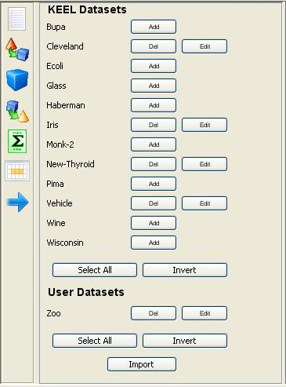
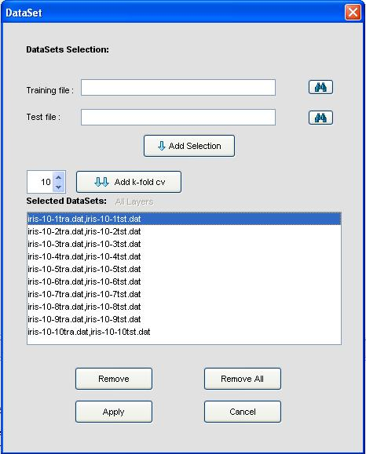
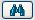
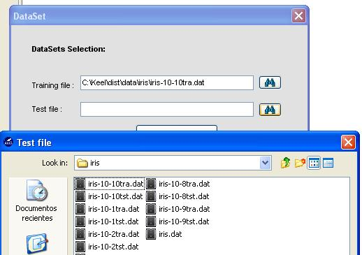
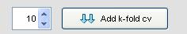

Data sets
This module lets the user edit the current data sets selected for the experiment.

As in the Select Datasets panel, the user can still Add and Delete data sets to the experiment (from those already registered in the KEEL environment). Also, it is still possible to import new data sets.
Furthermore, the button Edit allows the user to indicate which partitions (training and test) desires to use. This way, it is possible to temporally alter the files which will be included in the experiment.

This dialog shows the initial files of the data set. From it, is possible to Remove a pair of training a pair of training/test files, to Remove All files.
Also, the dialog allows to Add a new pair of training and test files. To do so, they must be selected by using the search buttons: 

Finally, it is also possible to add a complete set of k-fold cross validation files by selecting the adequate number of folds and pressing the button Add k-fold cv.
